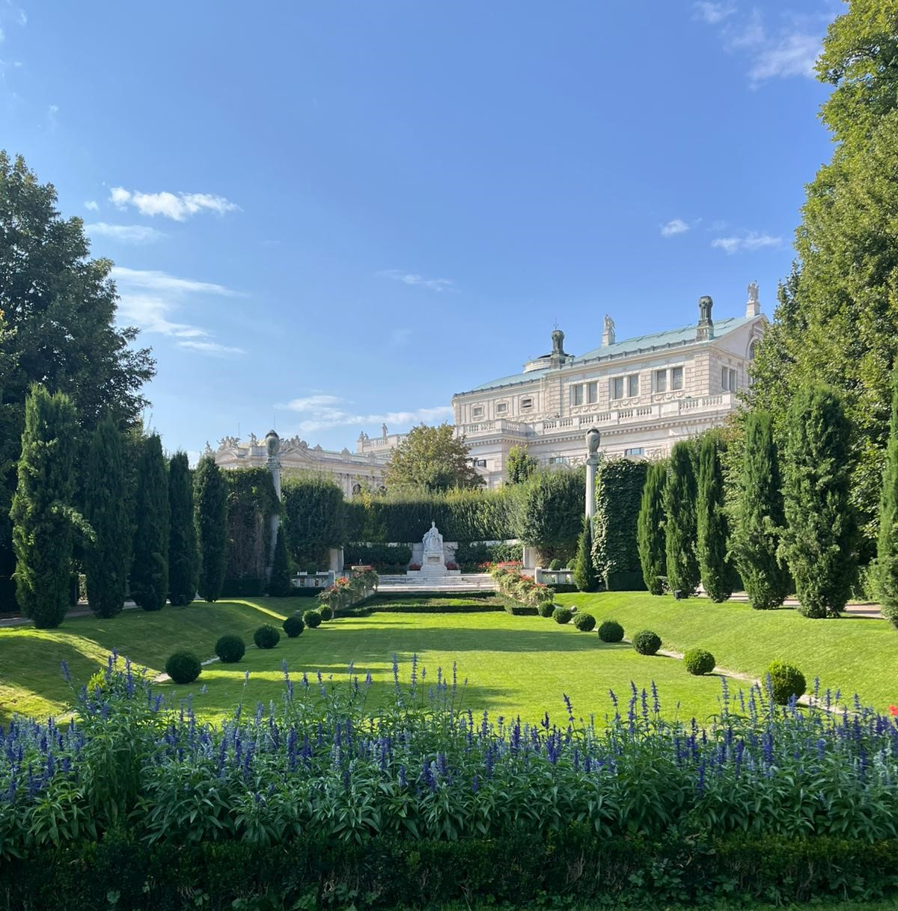
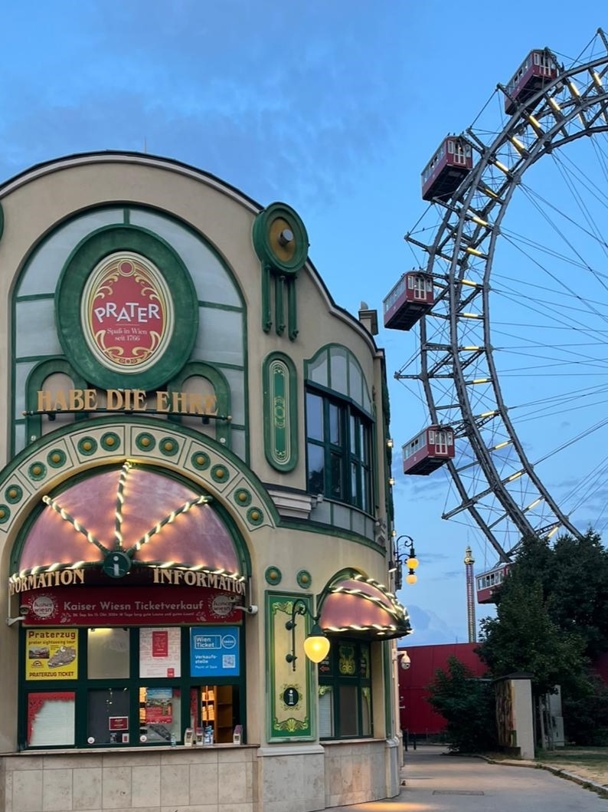
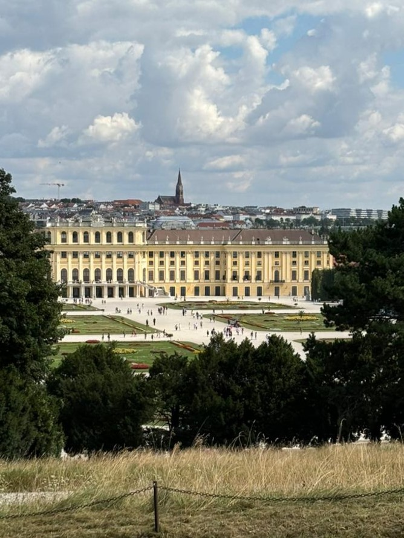
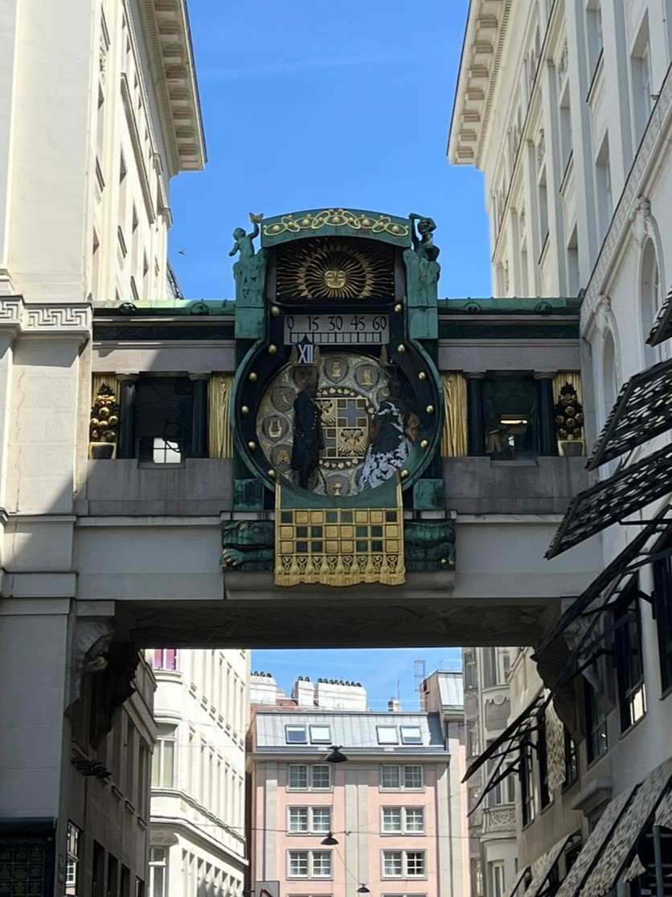
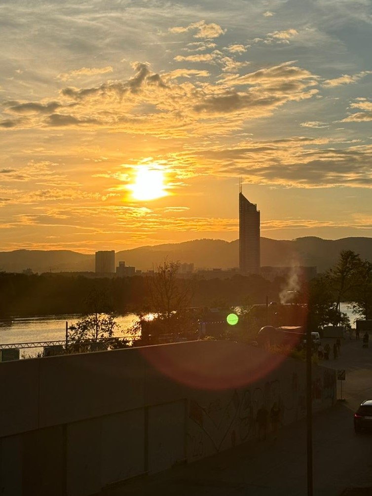

Austria: Vienna
Un viaggio di 4 giorni alla scoperta di Vienna tra palazzi imperiali, chiese barocche e quartieri iconici
Panoramica dell'Itinerario
Questo itinerario di 4 giorni ti porterà alla scoperta di Vienna, tra palazzi imperiali, chiese barocche e quartieri eleganti. Potrai visitare luoghi iconici come la Reggia di Schönbrunn, il Duomo di Santo Stefano, l'Hofburg e il Prater, immergendoti nell'atmosfera imperiale della capitale austriaca. Un'esperienza unica per respirare tutto il fascino della “Città della Musica”.
Itinerario Giorno per Giorno
Arrivo a Vienna

Attività:
- Mattina: Arrivo a Vienna e prima passeggiata nel centro storico della città. Il punto di partenza ideale è il Duomo di Santo Stefano, uno dei simboli più famosi della capitale austriaca. La cattedrale si trova nel cuore della città ed è facilmente raggiungibile con la metropolitana. L'interno è visitabile gratuitamente e colpisce per le sue dimensioni e per l'architettura gotica. Se hai tempo puoi anche salire sulla torre sud del duomo per ammirare una vista panoramica sui tetti di Vienna. Dopo la visita continua la passeggiata lungo Graben, una delle strade più eleganti del centro, dove potrai vedere la famosa Colonna della Peste e la Chiesa di San Pietro. Prosegui poi verso Kohlmarkt, una via piena di negozi storici e boutique, fino ad arrivare a Michaelerplatz dove si trova l'ingresso monumentale dell'Hofburg, l'antica residenza imperiale della dinastia degli Asburgo.
- Pomeriggio: Dopo aver attraversato l'area dell'Hofburg puoi raggiungere Heldenplatz, una grande piazza storica circondata da edifici imperiali. Da qui prosegui verso il Parlamento austriaco e il Burgtheater, uno dei teatri più importanti del paese. Poco distante si trova anche il Rathaus, il municipio di Vienna, situato nella grande Rathausplatz. Questa zona è molto piacevole da visitare a piedi e spesso ospita eventi e mercatini stagionali. Continua poi verso il MuseumsQuartier, uno dei più grandi complessi culturali d'Europa, dove si trovano musei, caffè e spazi culturali. Se vuoi fare una pausa puoi rilassarti nel vicino Burggarten, un piccolo parco dove si trova anche la famosa statua di Mozart. Termina il pomeriggio passando davanti al Teatro dell'Opera di Vienna e all'edificio della Secessione Viennese, simbolo del movimento artistico nato alla fine dell'Ottocento.
- Sera: Per la sera puoi spostarti verso il Prater, uno dei luoghi più famosi della città. Si tratta di un grande parco pubblico con un'area dedicata al luna park e alla storica ruota panoramica di Vienna. Qui puoi fare una passeggiata tra le attrazioni illuminate e, se vuoi, salire sulla ruota panoramica per ammirare la città dall'alto. Nella zona si trovano anche diversi ristoranti e chioschi dove mangiare qualcosa di veloce. Un'opzione economica molto diffusa a Vienna sono i chioschi di street food dove vendono panini con wurstel di diversi tipi, hot dog e snack veloci, perfetti per una cena low cost dopo una giornata di visite.
Vienna imperiale e i capolavori d'arte

Attività:
- Mattina: Dedica la mattinata alla visita della Reggia di Schönbrunn, uno dei luoghi più famosi di Vienna e antica residenza estiva degli imperatori asburgici. Il complesso è molto grande e vale la pena prendersi diverse ore per visitarlo con calma. Puoi esplorare sia le sale interne del palazzo, ricche di decorazioni e arredi imperiali, sia gli enormi giardini che si estendono dietro la reggia. Una passeggiata nei giardini permette di raggiungere la Gloriette, una struttura monumentale situata sulla collina da cui si può ammirare una splendida vista panoramica su tutta Vienna. Considera almeno 4 o 5 ore tra visita del palazzo e camminata nel parco. I biglietti possono essere acquistati facilmente online dai siti ufficiali oppure direttamente sul posto.
- Pomeriggio: Nel pomeriggio rientra verso il centro città per continuare la visita. Una prima tappa può essere la Karlskirche (Chiesa di San Carlo), una delle chiese barocche più belle di Vienna. Prosegui poi verso lo Stadtpark dove si trova il famoso monumento dorato dedicato a Johann Strauss, uno dei punti fotografici più conosciuti della città. Successivamente raggiungi il Castello del Belvedere, un elegante complesso barocco composto da due palazzi principali immersi in un grande giardino. Il Belvedere Superiore ospita un importante museo d'arte dove si trova anche il celebre dipinto “Il Bacio” di Gustav Klimt. Anche qui è consigliabile dedicare almeno 1 o 2 ore alla visita. Dopo il Belvedere puoi continuare la passeggiata passando per il Volksgarten e osservando dall'esterno alcune chiese storiche come la Minoritenkirche e la Votivkirche.
- Sera: Per la sera torna nel centro storico e scegli uno dei tanti ristoranti tradizionali viennesi per provare qualche piatto tipico. Vienna non è una città economica rispetto all'Italia, ma ci sono comunque molte opzioni per mangiare senza spendere troppo. Oltre ai ristoranti classici puoi trovare anche piccoli locali o chioschi dove mangiare wurstel, hot dog e snack veloci. Dopo cena puoi fare una passeggiata serale nel centro illuminato, che di notte ha un'atmosfera molto tranquilla e piacevole.
Dal design audace alla “skyline” del Danubio

Attività:
- Mattina: Inizia la giornata visitando la famosa Hundertwasserhaus, uno degli edifici più particolari di Vienna. Questo complesso residenziale progettato dall'artista Friedensreich Hundertwasser è famoso per le sue forme irregolari, le facciate colorate e i tetti ricoperti di vegetazione. Anche se l'edificio non è visitabile all'interno perché è abitato, vale la pena passare per scattare qualche foto e osservare da vicino la sua architettura unica. Nelle vicinanze si trova anche il Hundertwasser Village, una piccola area commerciale ispirata allo stesso stile artistico.
- Pomeriggio: Nel pomeriggio torna verso il centro storico per continuare l'esplorazione della città. Una tappa interessante è l'Ankeruhr, un orologio artistico situato nella piazza Hoher Markt. Questo orologio meccanico è famoso per il piccolo spettacolo che avviene ogni giorno a mezzogiorno, quando diverse figure storiche sfilano accompagnate da musica. Dopo questa visita puoi dirigerti verso Judenplatz, una piazza molto importante dal punto di vista storico. Nel Medioevo era il centro della comunità ebraica di Vienna e oggi ospita un memoriale dedicato alle vittime dell'Olocausto e un museo che racconta la storia della comunità ebraica della città.
- Sera: In serata puoi spostarti verso la zona moderna di Donau City, vicino al fiume Danubio. Questa area è molto diversa dal centro storico ed è caratterizzata da grattacieli e edifici moderni. È un luogo perfetto per fare una passeggiata al tramonto lungo il fiume e vedere un lato più contemporaneo della città. Qui si trovano anche diversi bar e locali dove fermarsi a bere qualcosa prima di rientrare in hotel.
Ultime ore a Vienna

Attività:
- Mattina: Nell'ultimo giorno approfitta delle ultime ore a Vienna per fare una passeggiata tranquilla nel centro storico. Puoi tornare nelle zone che ti sono piaciute di più oppure visitare qualche negozio per acquistare souvenir. Questo è anche il momento perfetto per fermarsi in uno dei famosi caffè storici della città. Una tappa molto conosciuta è il Café Central, uno dei locali storici più eleganti di Vienna, dove puoi assaggiare la celebre torta Sacher accompagnata da un caffè. Sedersi in un caffè viennese è quasi una tradizione della città e rappresenta un'esperienza tipica da provare almeno una volta durante il viaggio.
- Pomeriggio / Sera: Dopo aver concluso la passeggiata nel centro città è il momento di dirigersi verso l'aeroporto per il rientro. Per raggiungere l'aeroporto di Vienna puoi utilizzare i mezzi pubblici, che sono molto efficienti e ben organizzati. La città è molto facile da girare grazie alla metropolitana, ai tram e ai cartelli in inglese presenti praticamente ovunque. Anche se Vienna è una capitale abbastanza costosa, con un po' di organizzazione è possibile visitarla in modo low cost utilizzando i mezzi pubblici e scegliendo soluzioni economiche per mangiare e spostarsi.
Riepilogo Costi Stimati
*Costi esclusi: voli, assicurazione viaggio, spese personali
Consigli Pratici
Quando Andare
Il periodo ideale è da aprile a ottobre: nella primavera e all'inizio dell'autunno il clima è mite e perfetto per visitare la città. In pieno inverno fa molto freddo, mentre nei mesi di giugno, luglio e agosto le temperature possono essere leggermente elevate.
Come Muoversi
Il sistema di trasporti pubblici di Vienna, metropolitana (U-Bahn), tram e bus, è molto efficiente e copre praticamente tutta la città. Un biglietto singolo costa circa € 2,40. Puoi anche acquistare pass da 24/48/72 ore per viaggiare illimitatamente. Per arrivare dall'aeroporto al centro puoi usare la linea leggera S7 fino alla stazione centrale.
Dove Alloggiare
Alloggiare nel centro storico è comodo ma i prezzi sono decisamente più alti. Se vuoi risparmiare, scegli una zona un po' più periferica purché sia vicina a una fermata della metropolitana.
Cosa Assaggiare
Prova la celebre torta Sacher in uno dei caffè storici di Vienna, e assaggia anche gli hot dog che trovi nei fast food o chioschi nel centro città.